8 Kasım 2026 · Samsung S22 / Android 16 · Gerçek cihaz · NFCFit 1.0.14
Uygulama veri ve oturum korunarak güncellendi. Üye menüsü, profil, hazır taslak, pazar günü seçimi, dört egzersizli plan oluşturma/düzenleme, antrenman başlatma, bir manuel set kaydı, eşitleme, duraklatma, kütüphane Bilgi/Kaslar ve ilerleme ekranları gezildi. Sistem gezinme çubuğuyla uygulama menüsü çakışmıyor.
member-test1 hesabında TEST-Telefon-QA-08.11.2026 planı oluşturuldu. Bir test seansı 1/8 set (8 tekrar) ve 2:06 aktif süreyle duraklatılmış durumda. Seans henüz tamamlanmadığı için antrenman grafiğinde 0 seans, ayrıca 1 kayıtlı set ve 1 aktif gün görünmesi tutarlı.
Bu üç düzenleme 1.0.15 paketindedir; aşağıdaki görüntüler 1.0.14 sürümüne aittir. USB bağlantısı yeniden kesildiği için yeni paketin cihazda tekrar kontrolü bekliyor.
Yeni paket kurulumu, fiziksel çevrimdışı kayıt/yeniden açılış, kısmi bitiş ve bitiş sonrası grafik, cihazdan doğrudan antrenör rotasının reddi, girişli web antrenör yolculuğu ve ayrı NFC testleri tamamlandı sayılmıyor. Bu turda telefonun ağ ayarları değiştirilmedi.
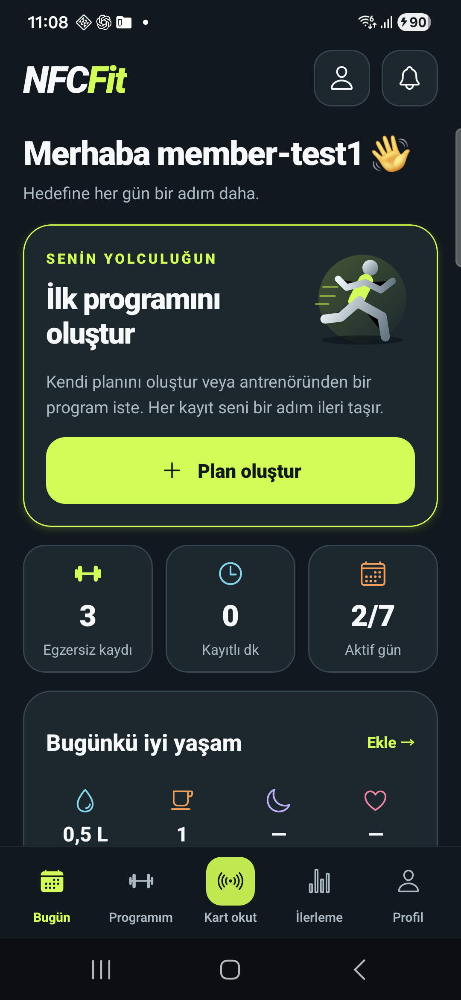
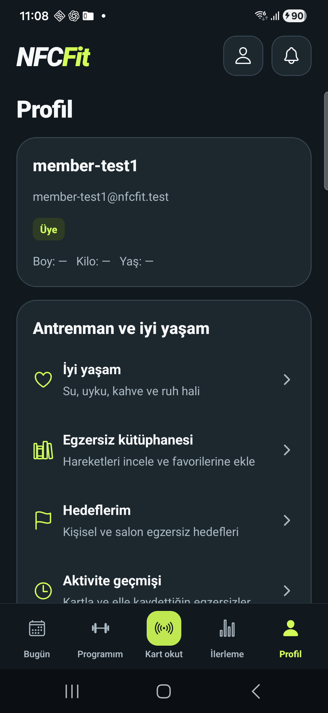
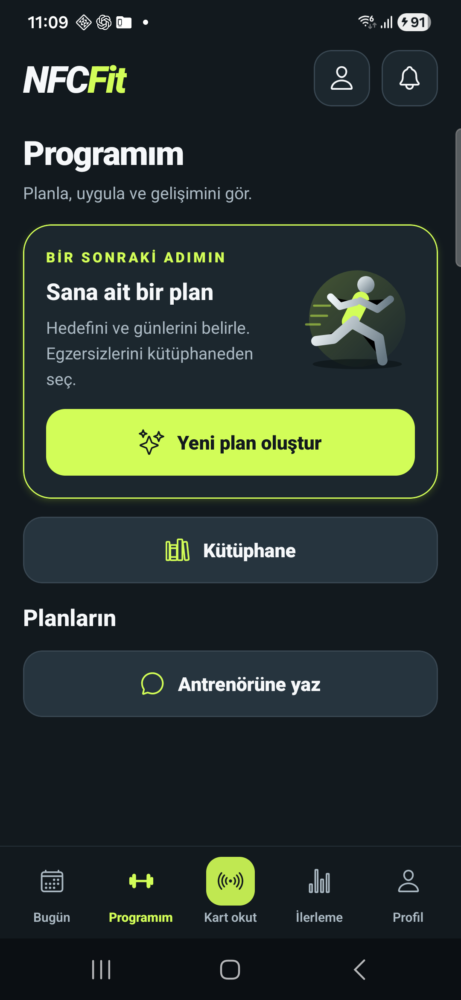
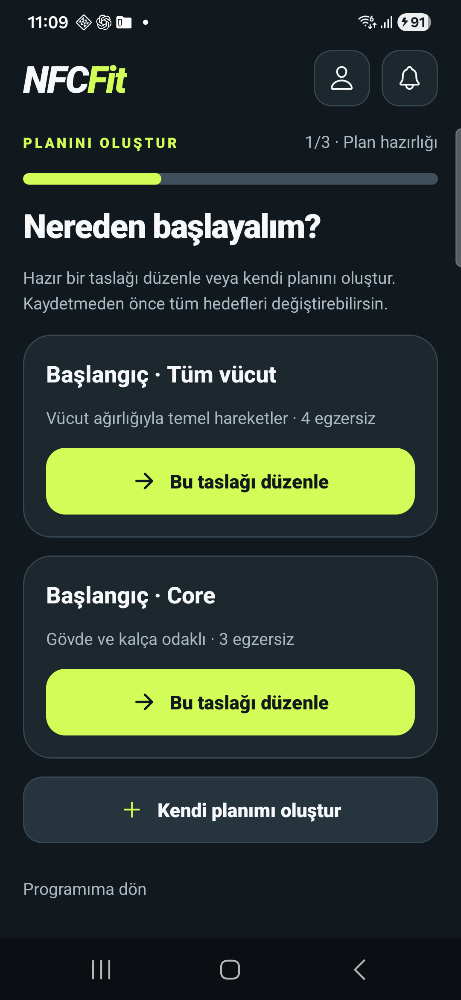
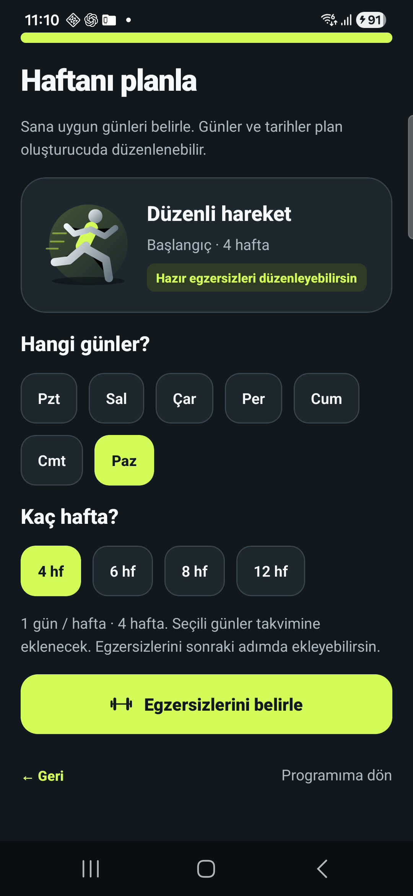
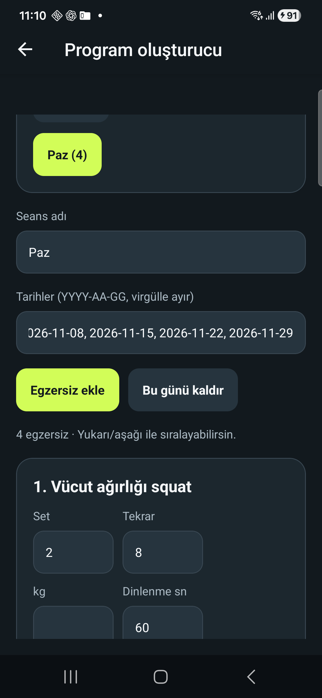
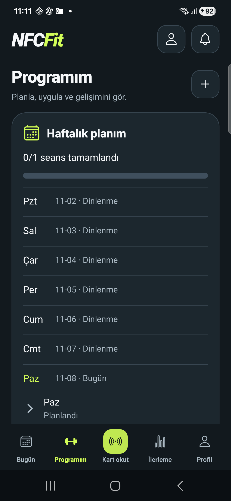
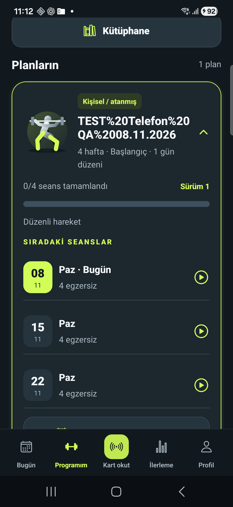
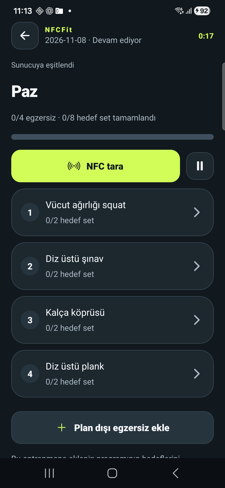
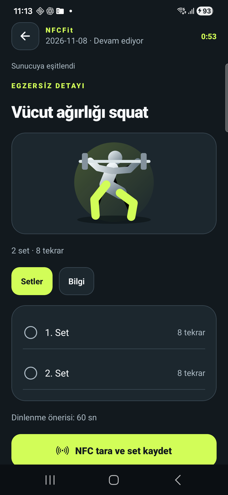
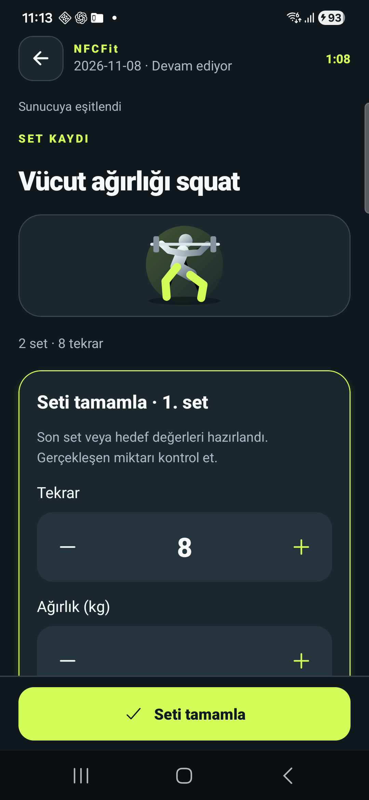
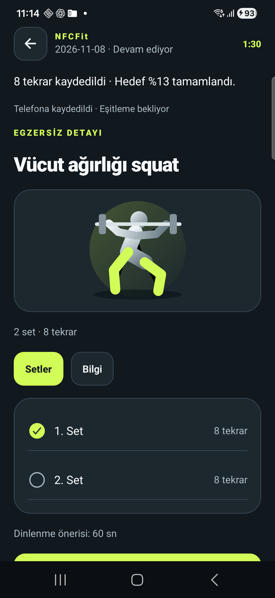
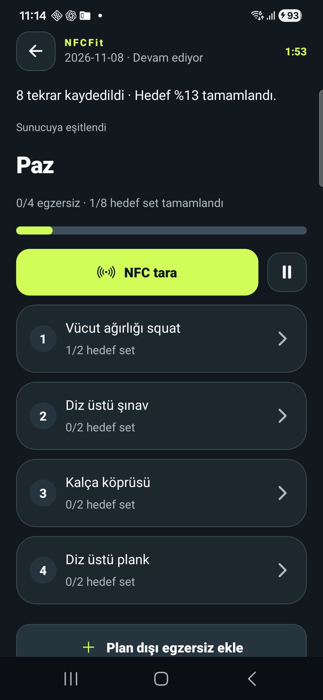
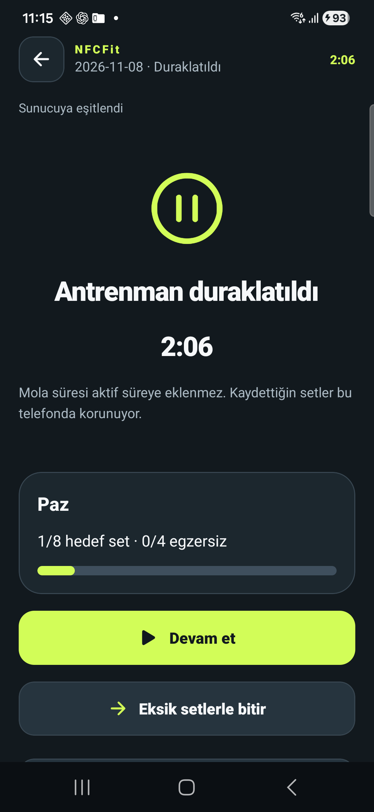
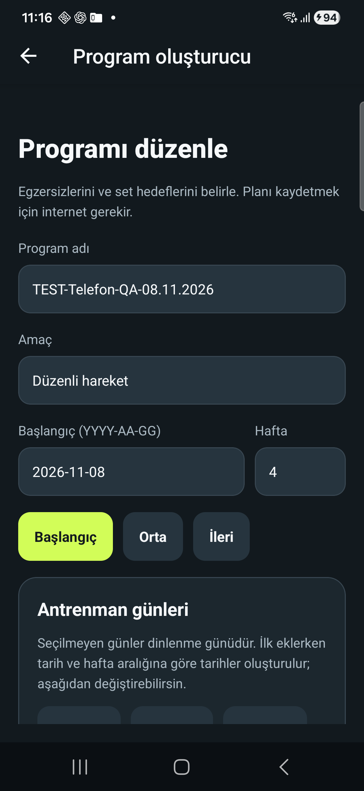
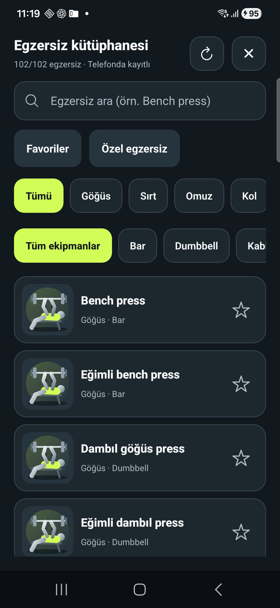
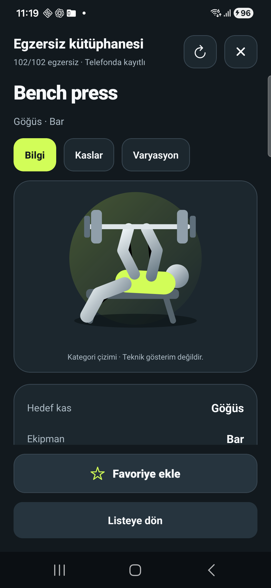
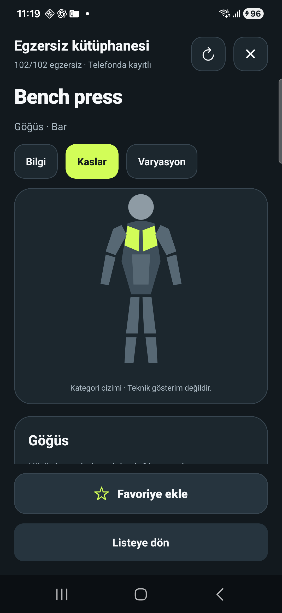
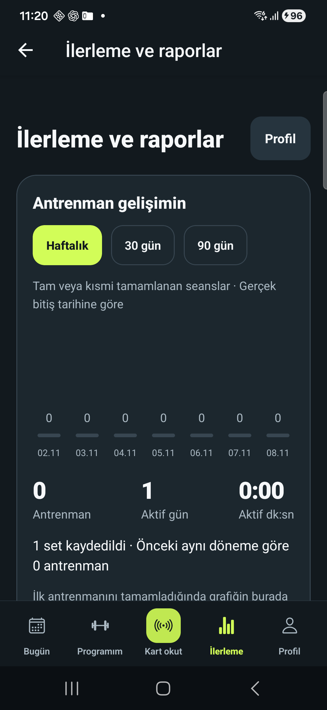